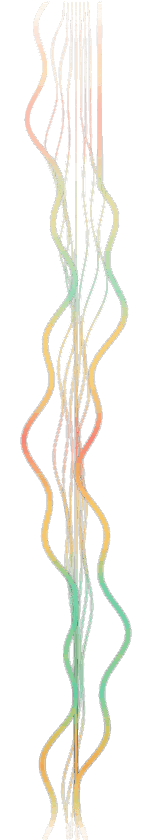
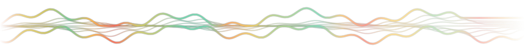

A wave along one edge of the desktop. Shape is processor load, density is memory, colour is effort — the last quarter of an hour, always in view.

Hover any moment on the wave and it reports what the machine was doing then — and names the process, if one was eating it.
The desktop under the band is measured in slices, so the strands darken over bright patches and lighten over dark ones as they go.
No permission prompts, no privileged helper, no admin password. It stops sampling entirely when nothing can see it.
